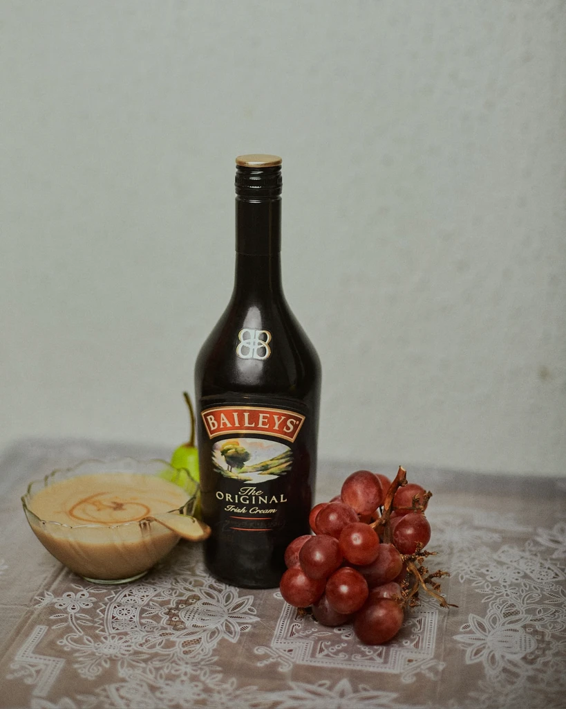

This page of our company contains frequently asked questions! We hope they will help you. If you have a question, you can look here, if there is no answer, then go to the contact page. We are always happy to help you!
1. How is wine made?
Answer: Wine is made from fermented grapes. The grapes are
crushed, and the juice is fermented with yeast to produce
alcohol.
2. What are the main types of wine?
Answer: The main types of wine are red, white, and
sparkling. Each type is made from different grape varieties
and has its unique characteristics.
3. How should I pair wine with food?
Answer: Pair wine with food by considering the wine's flavor
and the dish's ingredients. For example, red wine pairs well
with red meat, while white wine complements seafood and
poultry.
4. What is the difference between red and white wine?
Answer: Red wine is made from dark-colored grape varieties,
with the skins included during fermentation, giving it its
red color and bolder flavors. White wine is made from green
or yellow grapes, with the skins removed, resulting in a
lighter color and crisper taste.
5. How long can I store wine?
Answer: The storage time for wine depends on the type.
Generally, most wines are best enjoyed within 1 to 5 years
of purchase. However, some high-quality red wines can
improve with several years of aging.
6. What is the ideal serving temperature for white wine?
Answer: White wine is typically served chilled. The ideal
temperature varies by type, but a range of 45°F to 55°F (7°C
to 13°C) is a good starting point.
7. Can I age white wine?
Answer: Most white wines are best enjoyed relatively young
and don't benefit from aging like red wines. However, some
high-quality white wines, like certain Chardonnays and
Rieslings, can improve with a few years of cellaring.
8. What is the difference between Champagne and sparkling
wine?
Answer: Champagne is a type of sparkling wine produced in
the Champagne region of France. Sparkling wine refers to
similar wines produced in other regions. Both undergo a
secondary fermentation process to create bubbles, but only
Champagne can be called "Champagne."
9. How do I decant wine?
Answer: To decant wine, carefully pour it from the bottle
into a decanter. This helps aerate the wine and separate any
sediment. Allow red wines to breathe for about 30 minutes,
while lighter wines may need less time.
10. What is the difference between a dry and a sweet wine?
Answer: A dry wine has minimal residual sugar, resulting in
a less sweet taste. A sweet wine contains more sugar, which
imparts a sweeter flavor. The level of sweetness can vary
widely among wine types.

11. What is the best way to open a bottle of wine?
Answer: To open a bottle of wine, use a wine opener, such as
a corkscrew or a waiter's key. Insert the corkscrew into the
cork, turn it clockwise, and gently pull the cork out.
12. How can I tell if a wine is corked?
Answer: A wine is considered corked if it has a musty, moldy
smell and a damp cardboard-like taste. This is usually
caused by a contaminated cork.
13. What are tannins in wine?
Answer: Tannins are natural compounds found in grape skins,
seeds, and stems. They create a dry, astringent sensation in
the mouth and are more prevalent in red wines, contributing
to their structure and aging potential.
14. What is the proper way to store open wine bottles?
Answer: To preserve open wine bottles, reseal them with a
wine stopper and store them in the refrigerator. Red wines
can be stored for a few days, while white wines may last a
bit longer.
15. How can I improve my wine tasting skills?
Answer: You can improve your wine tasting skills by
attending tastings, trying wines from different regions, and
paying attention to the wine's aroma, flavor, and mouthfeel.
Practice is key to developing your palate.
16. Are organic wines better for you?
Answer: Organic wines are made from grapes grown without
synthetic pesticides or herbicides. While they may be better
for the environment, their health benefits are similar to
conventional wines.
17. What is the meaning of "vintage" on a wine label?
Answer: The vintage on a wine label indicates the year the
grapes were harvested. It can affect the wine's flavor and
quality, as each vintage varies due to weather conditions.
18. How long does an opened bottle of sparkling wine stay
bubbly?
Answer: An opened bottle of sparkling wine can stay bubbly
for 1-3 days if properly resealed and refrigerated. Using a
sparkling wine stopper can help maintain the carbonation.
19. What is the significance of wine regions like Bordeaux
and Napa Valley?
Answer: Wine regions like Bordeaux in France and Napa Valley
in California are renowned for producing high-quality wines
due to their unique terroir, climate, and winemaking
traditions.
20. Can I age inexpensive wines, or is it best to age only
expensive ones?
Answer: While some expensive wines are suitable for aging,
many affordable wines can also benefit from short-term
aging. It depends on the wine's structure and grape variety.